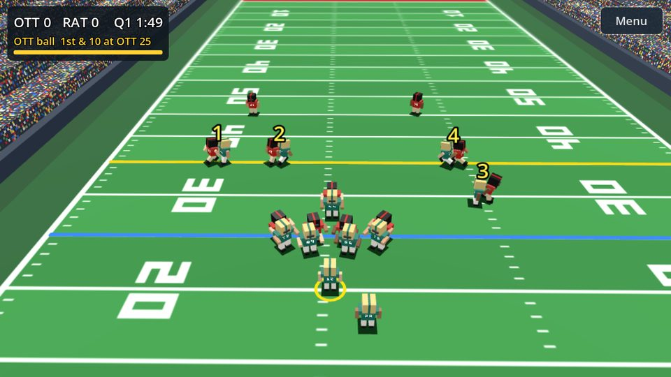
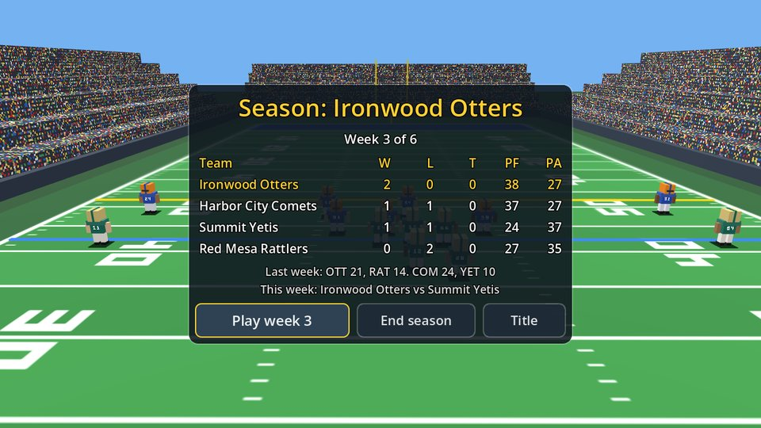

Tiny Titans Football
Call a play, then run it. Play 7 on 7 or 11 on 11, one game or a whole season. Throw to your receivers, run the option, hit the burst and take kicks back the other way. Four fictional teams and one loud stadium.
Version 0.3.5. Release notes · Backlog



New in 0.3.4, 0.3.3, 0.3.2 and 0.3.0
- 0.3.4: music and sound play in the browser again.
- 0.3.3: hints name the keys, Xbox buttons or touch buttons for the device you are using. The game pauses if your controller disconnects.
- 0.3.2: five save slots, each with its own record and season. A new Settings menu with sound levels, Text size and a frame rate number. Everything saves by itself.
- 0.3.1: a new app icon that fits your phone's icon shape.
- Season mode: 6 weeks against the other 3 teams, twice each. The top 2 meet in the Title Game.
- Burst: 2 seconds of top speed, ready again 5 seconds later. F, LT or the Burst button.
- Continue: leave mid-game and pick it up later from the title card.
- Settings: Music, Sound effects, Vibration, Auto pass, Players and Quarter length (1, 2 or 3 minutes).
- The play call opens on your last play. Press A, Space or tap to skip the wait after a play.
- The game pauses when your phone or browser tab loses focus. Big hits buzz the phone and rumble the controller.
What kind of game is this?
Things to do
- Play a full exhibition game against the computer on Easy, Normal or Hard.
- Play a season and chase the title. Your standings save between visits.
- Pick 7 on 7 for a quick game or 11 on 11 for the full field of players.
- Pick one of four teams: Ironwood Otters, Harbor City Comets, Red Mesa Rattlers or Summit Yetis.
- Throw bullets and lobs. Change a route or audible before the snap.
- Run the Speed Option and pitch to the back, or let the QB read the Zone Read.
- Turn on Auto pass and run after the catch.
- Hit the burst to break away from a tackler.
- Kick off, punt and return kicks. Run back interceptions and fumbles.
- Call man, zone, blitz or run defenses.
- Use Practice mode to try every play with no clock and no score.
Controls
- Keyboard: WASD or arrows move. Space snaps and sprints. F bursts. 1 to 4 pass: tap for a bullet, hold for a lob. E juke, or pitch on option plays. Q dive or tackle. Tab switch defender. R audible. Esc menu or back.
- Xbox controller: left stick or D-pad moves. In menus A chooses and B goes back. A snaps. Each receiver shows A, B, X or Y: tap that button for a bullet, hold it for a lob. RT sprints. LT bursts. B jukes, or pitches on option plays. X dives or tackles. LB switches defender. Before the snap, Y calls an audible and RB plus a receiver's button changes his route. View or Menu opens the Menu.
- Touch: drag on the left to move. Sprint, Juke, Dive and Burst buttons on the right. Tap a receiver or a number button to pass.
Play with an Xbox controller
Any Xbox Wireless Controller with Bluetooth works. That is every Series X|S controller and the Xbox One controllers made since 2016. If the plastic around the Xbox button matches the face of the controller, it has Bluetooth. Other controllers that your phone or browser sees as a standard gamepad use the same buttons.
- Hold the Xbox button to turn the controller on.
- Hold the small Pair button on top for 3 seconds, until the Xbox button flashes fast.
- On your phone, open Settings, then Connected devices, then Pair new device.
- Tap Xbox Wireless Controller. The Xbox button stays lit when it is connected.
- Open Tiny Titans Football. The touch buttons hide as soon as you use the controller.
- Connect the controller to your computer with a USB cable or Bluetooth.
- Open Play in your browser. Chrome, Edge, Firefox and Safari all work.
- Press any button once after the game loads, so the browser sees the controller.
Install on Android
- Tap Download for Android.
- Open the downloaded file.
- If Android asks, allow installs from this source.
- Tap Install, then open the game.
Android may show a Play Protect notice for apps from outside the Play Store. Version 0.3.5 installs over every version back to 0.2.0. If you still have version 0.1.0, uninstall it first. It used a test signature.
Feedback wanted
- How running, passing and tackling feel
- Whether 7 on 7 or 11 on 11 plays better
- How a season feels and whether 6 weeks is the right length
- Whether the burst is too strong or too weak
- Whether option plays and Auto pass are fun
- How the game plays on an Xbox controller
- Whether vibration feels right on your phone
- Whether the camera sits at the right height and distance
- Whether the computer is too easy or too hard
- Any play that works every time
- Your phone model if you see lag